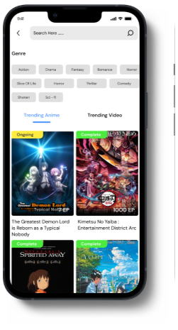

BiliBili App Re - Design

Description
So This Is A Redesign Regarding To My Anxiety And Problem Using This App For A Long TIme So I Decide Try To Fix Some Little Problem On This Application
My Roles
My Role Here As UX Designer And Researcher To Understand The Problem And Give Solution To This Application And Keep Updating The Solution
Duration
- 2 Weeks +
- 10-30 June 2022
Tools
- Figma
- Adobe Photoshop